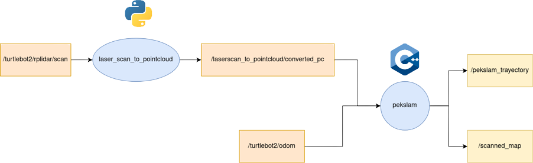

Implementation: SLAM
The present implementation makes use of PCL and Eigen libraries to implement the frontend and the backend of the SLAM process respectively. The system can handle up to 300 poses to store in the state vector and realies on the effectiveness of the Point-to-Point ICP algorithm, which was selected due to the efficient and fast computation compared to most robust alternatives such as the Point-To-Plane ICP or the G-ICP which tend to be more accurate but are more computationally expensive, this reliability problem is compensated by computing the update measurements more often and taking into account multiple overlapping scans. The ROS architecture is shown below, where the pekslam node handles both the frontend (scan matching) and backend (EKF framework).
